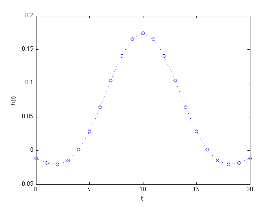
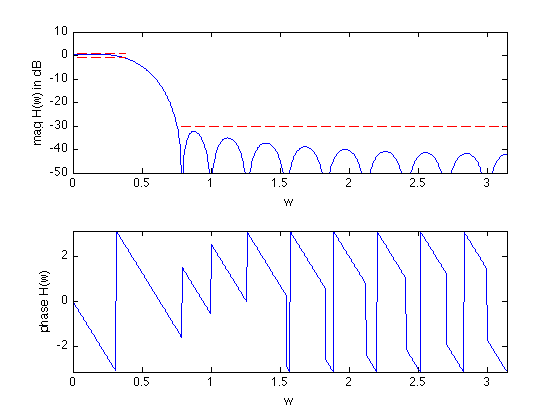

Minimize order of a linear phase lowpass FIR filter
% "Filter design" lecture notes (EE364) by S. Boyd % (figures are generated) % % Designs a linear phase FIR lowpass filter such that it: % - minimizes the filter order % - has a constraint on the maximum passband ripple % - has a constraint on the maximum stopband attenuation % % This is a quasiconvex problem and can be solved using a bisection. % % minimize filter order n % s.t. 1/delta <= H(w) <= delta for w in the passband % |H(w)| <= atten_level for w in the stopband % % where H is the frequency response function and variable is % the filter impulse response h (and its order/length). % Data is delta (max passband ripple) and atten_level (max stopband % attenuation level). % % Written for CVX by Almir Mutapcic 02/02/06 %******************************************************************** % user's filter specifications %******************************************************************** % filter order that is used to start the bisection (has to be feasible) max_order = 20; wpass = 0.12*pi; % passband cutoff freq (in radians) wstop = 0.24*pi; % stopband start freq (in radians) delta = 1; % max (+/-) passband ripple in dB atten_level = -30; % stopband attenuation level in dB %******************************************************************** % create optimization parameters %******************************************************************** m = 30*max_order; % freq samples (rule-of-thumb) w = linspace(0,pi,m); %********************************************************************* % use bisection algorithm to solve the problem %********************************************************************* n_bot = 1; n_top = max_order; disp('Rememeber that we are only considering filters with linear phase, i.e.,') disp('filters that are symmetric around their midpoint and have order 2*n+1.') disp(' ') while( n_top - n_bot > 1) % try to find a feasible design for given specs n_cur = ceil( (n_top + n_bot)/2 ); % create optimization matrices (this is cosine matrix) A = [ones(m,1) 2*cos(kron(w',[1:n_cur]))]; % passband 0 <= w <= w_pass ind = find((0 <= w) & (w <= wpass)); % passband Ap = A(ind,:); % transition band is not constrained (w_pass <= w <= w_stop) % stopband (w_stop <= w) ind = find((wstop <= w) & (w <= pi)); % stopband As = A(ind,:); % formulate and solve the feasibility linear-phase lp filter design cvx_begin quiet variable h_cur(n_cur+1,1); % feasibility problem % passband bounds Ap*h_cur <= 10^(delta/20); Ap*h_cur >= 10^(-delta/20); % stopband bounds abs( As*h_cur ) <= 10^(atten_level/20); cvx_end % bisection if strfind(cvx_status,'Solved') % feasible fprintf(1,'Problem is feasible for n = %d taps\n',n_cur); n_top = n_cur; % construct the full impulse response h = [flipud(h_cur(2:end)); h_cur]; else % not feasible fprintf(1,'Problem not feasible for n = %d taps\n',n_cur); n_bot = n_cur; end end n = n_top; fprintf(1,'\nOptimum number of filter taps for given specs is 2n+1 = %d.\n',... 2*n+1); %******************************************************************** % plots %******************************************************************** figure(1) % FIR impulse response plot([0:2*n],h','o',[0:2*n],h','b:') xlabel('t'), ylabel('h(t)') figure(2) % frequency response H = exp(-j*kron(w',[0:2*n]))*h; % magnitude subplot(2,1,1) plot(w,20*log10(abs(H)),... [wstop pi],[atten_level atten_level],'r--',... [0 wpass],[delta delta],'r--',... [0 wpass],[-delta -delta],'r--'); axis([0,pi,-50,10]) xlabel('w'), ylabel('mag H(w) in dB') % phase subplot(2,1,2) plot(w,angle(H)) axis([0,pi,-pi,pi]) xlabel('w'), ylabel('phase H(w)')
Rememeber that we are only considering filters with linear phase, i.e., filters that are symmetric around their midpoint and have order 2*n+1. Problem is feasible for n = 11 taps Problem not feasible for n = 6 taps Problem not feasible for n = 9 taps Problem is feasible for n = 10 taps Optimum number of filter taps for given specs is 2n+1 = 21. 